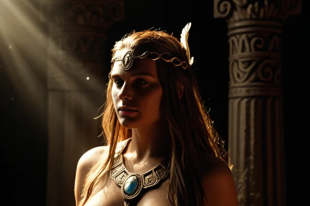

Анграбода
Анграбода (Angrboða) — великанша, мать детей Локи
Angrboða
Анграбода ("Вносящая скорбь") — великанша из Йотунхейма, жена Локи и мать трёх ужасных существ: Фенрира (огромного волка), Ёрмунганда (Мирового Змея) и Хель (владычицы мёртвых). Она символизирует злобу и хаос.
Происхождение: Йотунхейм, род великанов
Германическое имя: Aŋgrabadô
Роль: великанша, мать детей Локи
Семья
- Муж: Локи (Lóki)
- Дети: Фенрир (волк), Ёрмунганд (змей), Хель (владычица мёртвых)
Легенды
- Богам предсказали, что дети Анграбоды принесут беды Асгарду
- Хель была отправлена Одином в Хельхейм
- Ёрмунганд бросили в море, где он вырос и обвил Мир
Источники
Прозаическая Эдда, Скильдакапа
ᚱ